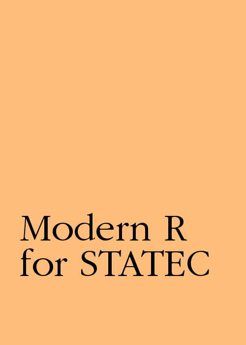

Modern R for STATEC
Bruno Rodrigues
2017-10-17
Preface

What is R?
Read R’s official answer to this question here. To make it short: R is multi-paradigm (procedural, imperative, object-oriented and functional)1 programming language that focuses on applications in statistics. By statistics I mean any field that uses statistics such as official statistics, economics, finance, data science, etc.
Why modern R?
Modern R instead of just R because we are going to learn how to use modern packages and concepts, such as functional programming (which is quite an old concept actually, but one that came into fashion recently). R is derived from S, which is a programming language that has roots in FORTRAN and Scheme. If you learned R at university, you’ve probably learned to use it as you would have used FORTRAN; very long scripts where data are represented as matrices and where row-wise (or column-wise) operations are implemented with for loops. There’s nothing wrong with that, mind you, but it is a shame not to use R’s functional programming capabilities that it inherited from Scheme, because I believe that it makes writing code easier and more natural. Also, R evolved a lot in the recent years, in great part thanks to the work of Hadley Wickham and his collection of packages known as the tidyverse. By using the packages from the tidyverse and R’s built-in functional programming capabilities, we can write code that is faster and easier to explain to colleagues, and also easier to maintain.
What is Rstudio?
Rstudio is a modern IDE that makes writing R code easier. The first thing we are going to learn is how to use it. R and Rstudio are both open source: this means that the source code is freely available on the internet and contributions by anyone are welcome and integrated; provided they are meaningful and useful.
Prerequisites
R and Rstudio are the two main pieces of software that we are going to use. Both are already installed on your desktop computer. R is the programming language and Rstudio is a modern IDE for it. You can use R without Rstudio; but you cannot use Rstudio without R.
If you wish to install R and Rstudio at home to follow the examples in this book you can do it as both pieces of software are available free of charge (for firms paid options for Rstudio exist). Installation is simple, but operating system dependent. To download and install R for Windows, follow this link. For macOS, follow this one. If you run a GNU+Linux distribution, you can install R using the system’s package manager. On Ubuntu, install r-base.
For Rstudio, look for your operating system here.
What are packages?
There is one more step; we are going to install some packages. Packages are additional pieces of code that can be installed from within R with the following function: install.packages(). These packages extend R’s capabilities significantly, and are probably one of the main reasons R is so popular. As of October 2017, R has over 11000 packages.
To install the packages we need, first open Rstudio and then copy and paste this line in the console:
install.packages(c("tidyverse", "checkpoint", "eurostat", "ggthemes", "janitor", "openxlsx", "rio"))
or go to the Packages pane and then click on Install:

In this book we are going to focus on R’s functional programming capabilities↩